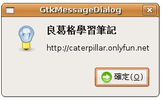

在程式中常出現一些簡單的對話或訊息方塊，有GTK中，它們都是GtkDialog的子類，在這邊先介紹一些GTK內建的對話方塊，常見類型之一是GtkMessageDialog，首先看個簡單的範例，改寫 自 訂 callback 函式 中的例子，按下按鈕後會出現訊息方塊：
- message_dialog_demo.c
#include <gtk/gtk.h>
void button_clicked(GtkWidget *button, gpointer data) {
GtkWidget *dialog = gtk_message_dialog_new(GTK_WINDOW(data),
GTK_DIALOG_MODAL, GTK_MESSAGE_INFO,
GTK_BUTTONS_OK, "良葛格學習筆記");
gtk_window_set_title(GTK_WINDOW(dialog), "GtkMessageDialog");
gtk_message_dialog_format_secondary_text(
GTK_MESSAGE_DIALOG(dialog), "http://caterpillar.onlyfun.net");
gtk_dialog_run(GTK_DIALOG(dialog));
gtk_widget_destroy(dialog);
}
int main(int argc, char *argv[]) {
GtkWidget *window;
GtkWidget *button;
gtk_init(&argc, &argv);
window = gtk_window_new(GTK_WINDOW_TOPLEVEL);
gtk_window_set_title(GTK_WINDOW(window), "GtkMessageDialog");
button = gtk_button_new_with_label("按我");
gtk_container_add(GTK_CONTAINER(window), button);
g_signal_connect(GTK_OBJECT(window), "destroy",
G_CALLBACK(gtk_main_quit), NULL);
g_signal_connect(GTK_OBJECT(button), "clicked",
G_CALLBACK(button_clicked), window);
gtk_widget_show(window);
gtk_widget_show(button);
gtk_main();
return 0;
}gtk_message_dialog_new()的宣告如下：
GtkWidget* gtk_message_dialog_new(GtkWindow *parent,
GtkDialogFlags flags,
GtkMessageType type,
GtkButtonsType buttons,
const gchar *message_format,
...);
GtkDialogFlags flags,
GtkMessageType type,
GtkButtonsType buttons,
const gchar *message_format,
...);
設定parent，當訊息方塊是獨佔式（Modal）時，若不回應訊息方塊，則無法操作其父視窗，GtkDialogFlags則可以設定：
- GTK_DIALOG_MODAL：設定為獨佔視窗。
- GTK_DIALOG_DESTROY_WITH_PARENT：如果parent被銷毀，則一併銷毀對話方塊。
- GTK_DIALOG_NO_SEPARATOR：在對話方塊中不出現分隔線，在 使用 GtkDialog 自訂對話方塊 中會再介紹。
GtkMessageType則指定這是哪個類型的訊息：
- GTK_MESSAGE_INFO
- GTK_MESSAGE_WARNING
- GTK_MESSAGE_QUESTION
- GTK_MESSAGE_ERROR
- GTK_MESSAGE_OTHER
GtkButtonsType則可以設定幾個預設的按鈕類型：
- GTK_BUTTONS_NONE
- GTK_BUTTONS_OK
- GTK_BUTTONS_CLOSE
- GTK_BUTTONS_CANCEL
- GTK_BUTTONS_YES_NO
- GTK_BUTTONS_OK_CANCEL
message_format的設定，其實是類似printf()的字串格式，例如可以這麼設定：
GtkWidget *dialog = gtk_message_dialog_new(GTK_WINDOW(data),
GTK_DIALOG_MODAL, GTK_MESSAGE_INFO,
GTK_BUTTONS_OK, "%s 已刪除", filename);
GTK_DIALOG_MODAL, GTK_MESSAGE_INFO,
GTK_BUTTONS_OK, "%s 已刪除", filename);
要顯示對話方塊，方法之一是使用gtk_dialog_run()，這會將對話方塊以獨佔模式顯示，無論其GtkDialogFlags設定為何，因為這 會呼叫gtk_window_set_modal()函式，將對話方塊設定為獨佔模式，當回應對話方塊之後，您要使用 gtk_widget_destroy()銷毀對話方塊。
以下是一個執行時對話方塊的參考畫面：

gtk_dialog_run()結束後會傳回一個response id，為 GtkResponseType 的enum值，代表使用者按下的按鈕，如果對話方塊只是被關閉（按下X），則會傳回GTK_RESPONSE_NONE，您可以依這個傳回值來決定回應對話方塊後的下一步動作，例如GtkDialog的說明文件中有這麼一段範例程式：
gint result = gtk_dialog_run (GTK_DIALOG (dialog));
switch (result)
{
case GTK_RESPONSE_ACCEPT:
do_application_specific_something ();
break;
default:
do_nothing_since_dialog_was_cancelled ();
break;
}
gtk_widget_destroy (dialog);
switch (result)
{
case GTK_RESPONSE_ACCEPT:
do_application_specific_something ();
break;
default:
do_nothing_since_dialog_was_cancelled ();
break;
}
gtk_widget_destroy (dialog);